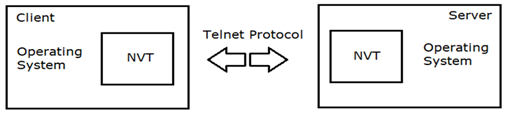
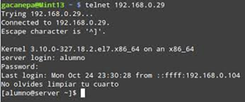
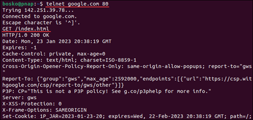
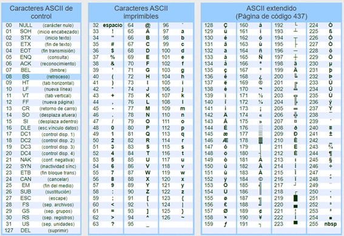

TELNET
INTRODUCCIÓN
Cuando se desarrollaron los sistemas operativos multiusuario, la manera habitual de trabajar en los mismos consistía en utilizar un equipo terminal conectado directamente al ordenador, en general por medio de una línea serie. El ordenador tenía que saber qué terminales tenía conectados y cómo podía controlarlos. Con la llegada de las redes de comunicaciones, que permitían interconectar diferentes ordenadores, uno de sus usos naturales era mantener una sesión de trabajo interactiva con un ordenador remoto. Para ello, había que establecer un protocolo a nivel de aplicación que hiciese posible por un lado que el ordenador terminal y el ordenador remoto en el que quería trabajar el usuario se pudieran comunicar y por otro lado facilitar el control del ordenador terminal desde el ordenador remoto. Un ordenador puede permitir que cualquier tipo de ordenador conectado a la red pueda acceder a él, no obstante, no es práctico que deba saber cómo se controlan cada uno de los tipos posibles de ordenadores. La solución general a estos requisitos se basa en el uso de un protocolo de terminal virtual
PROTOCOLO
El protocolo de terminal virtual más utilizado es Telnet (1983, RFC 854). Telnet sigue el modelo cliente/servidor dentro de una arquitectura TCP/IP. Se puede utilizar cualquier número de puerto para las conexiones y, de hecho, existen muchas aplicaciones que utilizan el protocolo Telnet para la comunicación, cada una con su propio número de puerto. La aplicación básica, no obstante, consiste en establecer una sesión de trabajo interactiva (login) con el sistema servidor y, en este caso, el número de puerto utilizado es el 23 TCP.
Telnet utiliza el concepto de terminal virtual de red o NVT. Se trata de un dispositivo imaginario para el que se definen unas funciones de control canónicas, de manera que se puede establecer una correspondencia entre ellas y las de cada tipo de terminal real. Cuando se establece la conexión entre el cliente y el servidor, la comunicación se produce entre dos NVT. Esto significa que tanto el sistema cliente como el sistema servidor deben hacer corresponder sus características en las de un NVT y suponer que en el otro extremo de la conexión hay otro NVT.

Una vez que se ha realizado la conexión TCP entre las NVT y comienza la sesión Telnet, la única tarea real que tiene el software cliente y servidor es capturar la entrada y la salida y redirigirla a la red. El usuario del terminal puede ser una persona o un proceso. Los datos leídos en el primer caso por norma general serán los caracteres tecleados y, en el segundo, los que vaya generando el proceso. La presentación de los datos recibidos puede consistir en escribirlos en la pantalla, enviarlos a la impresora o pasarlos al proceso usuario.

Aunque el inicio de sesión remoto (login) es una gran parte de lo que trata Telnet, es importante tener en cuenta que el protocolo no fue diseñado de manera inherente para esta función específica. Cuando se utiliza Telnet para acceder a un dispositivo remoto, el propio protocolo solo se utiliza para establecer la conexión entre las máquinas cliente y servidor, codificar los datos que se deben transmitir según las reglas de Telnet NVT y facilitar la negociación y el uso de opciones. . Son los propios dispositivos cliente y servidor quienes deciden si se utiliza Telnet para el acceso remoto o para algún otro propósito. Muchas de las aplicaciones de transferencia de ficheros y mensajes, como FTP, SMTP, NNTP y HTTP, se comunican mediante el envío de órdenes y mensajes de texto y utilizan la especificación NVT de Telnet para garantizar la compatibilidad de la comunicación entre dispositivos. En realidad, no establecen sesiones Telnet ni utilizan funciones como la negociación de opciones, solo envían datos de una manera coherente con el funcionamiento de Telnet. Así, aunque los usuarios modernos de Internet no utilizan Telnet de manera intencionada específicamente, lo utilizan indirectamente cada vez que envían o reciben correo electrónico o navegan por la web. Los administradores incluso pueden utilizar el software cliente Telnet para acceder a dispositivos como servidores FTP y HTTP y enviarles órdenes manualmente.

NVT
CARACTERES
Los caracteres que representan los datos del flujo de comunicación utilizan por defecto codificación ASCII de 7 bits.

CARACTERES ESPECIALES
Los terminales NVT interpretan caracteres especiales que se pueden enviar al flujo de datos.
| Decimal | Hex | Abrev. | Nombre | Descripción | Uso |
|---|---|---|---|---|---|
| 0 | 00 | NUL | NULL | Carácter nulo | Obligatorio |
| 7 | 07 | BEL | Bell | Aviso sonoro | Opcional |
| 8 | 08 | BS | Backspace | Retroceso | Opcional |
| 9 | 09 | HT | Horizontal Tab | Tabulación horizontal | Opcional |
| 10 | 0A | LF | Line Feed | Nueva línea | Obligatorio |
| 11 | 0B | VT | Vertical Tab | Tabulación vertical | Opcional |
| 12 | 0C | FF | Form Feed | Salto de página | Opcional |
| 13 | 0D | CR | Carriage Return | Salto de línea | Obligatorio |
Los terminales NVT representan el fin de línea (EOL) como la combinación de los caracteres especiales CR+LF
TIPO TRANSMISIÓN
Los terminales NVT por defecto son half-duplex, aunque también soportan el modo full-dúplex. En modo half-duplex un dispositivo que está enviando datos debe acabar su transmisión con la orden especial de Telnet "go ahead" indicando al otro dispositivo que ahora puede transmitir. Las redes modernas funcionan en modo full-dúplex por lo que en la mayoría de los casos el cliente y el servidor Telnet aceptan utilizar la opción "Suppress Go Ahead" que elimina la necesidad de usar el modo half-dúplex.
ÓRDENES
Los terminales NVT pueden ser controlados mediante órdenes de Telnet. Todas las órdenes Telnet se envían en el mismo flujo de comunicación que los datos normales. Las órdenes se representan utilizando valores de bytes especiales en el rango de 240 a 254. Para diferenciar entre bytes de datos y órdenes Telnet, cada orden va precedida de un carácter de escape especial, con el nombre de "Interpret As Command" (IAC). IAC tiene un valor de 255 (nbsp), cuando el destinatario ve este carácter, sabe que el siguiente byte es una orden y no datos.
| ASCII | HEX | Símbolo | Orden | Nombre | Descripción |
|---|---|---|---|---|---|
| 240 | F0 | ≡ | SE | Fin subnegociación | Marca la finalización de una subnegociación de opciones |
| 241 | F1 | ± | NOP | Sin operación | Ninguna operación |
| 242 | F2 | ≥ | DM | Marca de datos | Marca el final de una secuencia de datos que el destinatario debe escanear para buscar órdenes urgentes de Telnet |
| 243 | F3 | ≤ | BRK | Pausa | Pulsación de la tecla break |
| 244 | F4 | ⌠ | IP | Proceso de interrupción | Indica al destinatario que interrumpa, aborte, suspenda o finalice el proceso en uso |
| 245 | F5 | ⌡ | AO | Abortar la salida | El host remoto continúa el proceso actual, pero descarta toda la salida restante |
| 246 | F6 | ÷ | AYT | ¿Estás ahí? | El host remoto devuelve salida para indicar que sigue funcionando |
| 247 | F7 | ≈ | EC | Borrar carácter | Suprime el último carácter no suprimido del flujo de datos |
| 248 | F8 | ° | EL | Borrar línea | Suprime todos los caracteres hasta la última secuencia de fin de línea |
| 249 | F9 | ∙ | GA | Adelante | En half-dúplex, indica que el otro dispositivo puede transmitir |
| 250 | FA | · | SB | Inicio subnegociación | Marca el inicio de una subnegociación de opciones Telnet |
| 251 | FB | √ | WILL | Actuará | Indica disposición a realizar o continuar una opción Telnet |
| 252 | FC | ⁿ | WON'T | No actuará | Indica que no se realizará o se deja de realizar una opción |
| 253 | FD | ² | DO | Haz | Solicita que el otro dispositivo realice una opción |
| 254 | FE | ■ | DON'T | No hagas | Indica que no se debe realizar una opción |
| 255 | FF | NBSP | IAC | Interpretar como comando | Interpretar siguiente byte como comando Telnet |
OPCIONES
Si el cliente y el servidor soportan una funcionalidad más avanzada que la de un NVT basico, el protocolo permite que lleven a cabo una negociación para ponerse de acuerdo sobre qué opciones se utilizarán en la comunicación. La negociación consiste en intercambiar códigos que indican las opciones del protocolo que cada parte desea o está dispuesta a utilizar. Las opciones posibles no están definidas en la especificación del protocolo sino en especificaciones independientes. Puede ser necesario en algunas opciones que se negocian parámetros particulares, en estos casos la subnegociación depende de la implementación de la propia opción. La negociación de las opciones se puede producir al principio de la sesión o en cualquier otro momento de la sesión. Cada opción está definida por un número entre 0 y 255. El valor 255 se reserva para ampliar el número de opciones. Se puede utilizar el número de la opción el código tipo texto de la opción para invocar su uso.
Algunas de las opciones más habituales son:
| Número | Opción | Código | Descripción | RFC |
|---|---|---|---|---|
| 0 | TRANSMIT-BINARY | TRANSMIT-BINARIO | Permite a los dispositivos enviar datos en forma binaria de 8 bits en lugar de ASCII de 7 bits | RFC 856 |
| 1 | ECHO | ECO | Permite negociar los distintos modos de eco de entrada en terminales | RFC 857 |
| 3 | SUPPRESS-GO-AHEAD | SUPRIMIR, SEGUIR ADELANTE | Permite que dispositivos en modo full-duplex no requieran el comando Telnet Go Ahead | RFC 858 |
| 5 | STATUS | ESTADO | Permite a un dispositivo solicitar el estado de una opción Telnet | RFC 859 |
| 6 | TIMING-MARK | MARCA DE TIEMPO | Marca de sincronización para medición de tiempos | RFC 860 |
| 10 | NAOCRD | NAOCRD | No ASCII Output Carriage Return Disposition | RFC 652 |
| 11 | NAOHTS | NAOHTS | No ASCII Output Horizontal Tab Stops | RFC 653 |
| 12 | NAOHTD | NAOHTD | No ASCII Output Horizontal Tab Disposition | RFC 654 |
| 13 | NAOFFD | NAOFFD | No ASCII Output Form Feed Disposition | RFC 655 |
| 14 | NAOVTS | NAOVTS | No ASCII Output Vertical Tab Stops | RFC 656 |
| 15 | NAOVTD | NAOVTD | No ASCII Output Vertical Tab Disposition | RFC 657 |
| 16 | NAOLFD | NAOLFD | No ASCII Output Line Feed Disposition | RFC 658 |
| 17 | EXTEND-ASCII | EXTENDER-ASCII | Extiende el conjunto ASCII estándar | RFC 698 |
| 24 | TERMINAL-TYPE | TIPO TERMINAL | Permite al servidor conocer el tipo de terminal del cliente | RFC 1091 |
| 31 | NAWS | NAWS | Negocia el tamaño de la ventana del terminal | RFC 1073 |
| 32 | TERMINAL-SPEED | VELOCIDAD TERMINAL | Permite negociar la velocidad del terminal | RFC 1079 |
| 33 | TOGGLE-FLOW-CONTROL | CONTROL DE FLUJO DE TOGGLE | Control de flujo activable/desactivable | RFC 1372 |
| 34 | LINEMODE | MODO DE LÍNEA | Permite edición local de líneas en el cliente | RFC 1184 |
| 37 | AUTHENTICATION | AUTENTICACIÓN | Soporte de autenticación en Telnet | RFC 1416 |
Para implementar la negociación de una opción se utilizan las órdenes DO, DON'T, WILL y WON'T
| Orden | Descripción |
|---|---|
| DO <opcion> | Solicitar al remoto que si utilice <opcion> |
| DON'T <opcion> | Solicitar al remoto que no utilice <opcion> |
| WILL <opcion> | Indicar al remoto que si se quiere utilizar <opcion> |
| WON'T <opcion> | Indicar al remoto que no se quiere utilizar <opcion> |
Para habilitar una opción. Dos posibles órdenes.
| Orden | Respuesta Remoto |
|---|---|
| WILL <opcion> | afirmativa DO <opcion> negativa DON'T <opcion> |
| DO <opcion> | afirmativa WILL <opcion> negativa DON'T <opcion> |
Para deshabilitar una opción. Dos posibles órdenes.
| Orden | Respuesta Remoto |
|---|---|
| WON'T <opcion> | DON'T <opcion> |
| DON'T <opcion> | WON'T <opcion> |
En el caso de que la opción necesite la negociación de parámetros opcionales se utilizarán las órdenes SB (subnegotiation begin) y SE (subnegotiation end).
Opción con parámetros opcionales
| NVT-1 | NVT-2 |
|---|---|
| IAC DO TERMINAL-TYPE | |
| IAC WILL TERMINAL-TYPE | |
| IAC SB TERMINAL-TYPE SEND IAC SE | |
| IAC SB TERMINAL-TYPE IS IBM-3278-2 IAC SE |
MODOS
Existen numerosas implementaciones del servicio Telnet tanto del lado del servidor como del cliente en todos los sistemas operativos. Los clientes Telnet tienen dos maneras de trabajar:
- modo comando.
En modo comando se envían órdenes que el NVT debe interpretar. Podemos iniciar una nueva conexión con el comando open, cerrar la conexión con quite, enviar órdenes de control al servidor con el comando send y ver los comandos disponibles al cliente con ? o display entre otras opciones. - modo conexión.
En modo conexión se envían datos.
Para conmutar entre los modos:
| Sale Modo | Tecla | Entra Modo |
|---|---|---|
| Conexión | Ctrl+] | Comando |
| Comando | CR inicio linea | Conexión |
COMANDOS
En el modo comando se pueden ejecutar, entre otros, los siguientes comandos:
| Comando | Descripción |
|---|---|
| close | Cierra la conexión |
| open | Realiza una conexión |
| logout | Cierra la sesión del usuario y cierra la conexión |
| display | Muestra los parámetros configurados por la conexión |
| mode | Cambia entre modo carácter y modo línea |
| quit | Sale de Telnet |
| send | Transmite caracteres especiales |
| set | Configura parámetros para la conexión |
| unset | Anula la configuración de parámetros de la conexión |
| status | Muestra el estado de la conexión |
| toggle | Cambia el valor verdadero o falso de un parámetro de conexión |
| slc | Cambia el estado de un carácter especial |
| z | Suspende Telnet |
| ! | Invoca una sub-shell |
| environ | Cambia el valor de variables de entorno |
Se puede utilizar ? para obtener más información y opciones adicionales de cada uno de los comandos. Por ejemplo set /?
Uso de comandos de telnet
### 1. Iniciar Telnet
$ telnet
telnet>
### Estamos en modo comando
### 2. Abrir una conexión a una máquina remota 192.168.1.10
telnet> open 192.168.1.10 23
Trying 192.168.1.10...
Connected to 192.168.1.10.
Escape character is '^]'.
### 3. El servidor solicita credenciales
login: usuario
password: ********
Login successful.
Welcome to the remote system.
### Al terminar estamos en modo conexión
$ ### Entrar en modo comando con Ctrl+]
### 4. Ver el estado de la conexión
telnet> status
Connected to 192.168.1.10.
Operating in character mode.
### 5. Cambiar el modo de operación a line
telnet> mode line
Line mode on.
### 6. Ver parámetros configurados
telnet> display
Local echo: off
Line mode: on
Terminal type: VT100
### 7. Configurar el parametro eco local
telnet> set echo
Local echo on.
### 8. Enviar señal de interrupción (BREAK)
telnet> send break
### 9. Realizar ls en host local (sub-shell)
telnet> !
$ ls
$ readme.txt
$ install.txt
$ exit
Returning to telnet.
### 10. Realizar ls en host remoto.
telnet> # Pulsar CR para entrar en modo conexión
$ # estamos en modo conexion en el remoto
$ ls
$ file1.txt
$ file2.txt
$ # pulsar +] para entrar en modo comando
### 11. Cerrar la sesión remota
telnet> logout
Connection closed by foreign host.
### 12. Cerrar Telnet
telnet> quit
Connection closed.